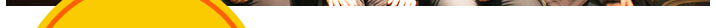
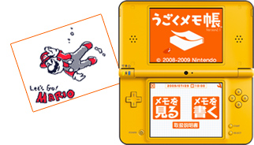

『うごくメモ帳』は、現在世界中で使われており、作品公開掲示板「うごメモシアター」にもたくさんの作品が日々投稿されています。
2010年9月13日〜2011年1月10日に、スーパーマリオ25周年記念企画として、「マリオうごメモコンテスト」が開催されました※。世界中から投稿された、マリオを使った「うごメモ」作品の数々は、どうやって描いたのかわからないくらい細かく描きこまれていたり、絵の動きと音のタイミングがピッタリ合っていたり、思わずハッとするストーリーやアイデアが盛り込まれていたりと、どれも一見の価値があるものでした。
そして先月1月9日、「ニンテンドー3DS」の体験会が行われた千葉県・幕張にて、この「マリオうごメモコンテスト」に日本で入選された作者のみなさんをお招きした座談会が開かれました。今回のN.O.Mでは、この座談会の様子をたっぷりご紹介します。
2010年9月13日〜2011年1月10日に、スーパーマリオ25周年記念企画として、「マリオうごメモコンテスト」が開催されました※。世界中から投稿された、マリオを使った「うごメモ」作品の数々は、どうやって描いたのかわからないくらい細かく描きこまれていたり、絵の動きと音のタイミングがピッタリ合っていたり、思わずハッとするストーリーやアイデアが盛り込まれていたりと、どれも一見の価値があるものでした。
そして先月1月9日、「ニンテンドー3DS」の体験会が行われた千葉県・幕張にて、この「マリオうごメモコンテスト」に日本で入選された作者のみなさんをお招きした座談会が開かれました。今回のN.O.Mでは、この座談会の様子をたっぷりご紹介します。
※
日本国内だけでなく、アメリカ・ヨーロッパでも、“Make Your Own Mario Flipnote”と題して実施されました。
